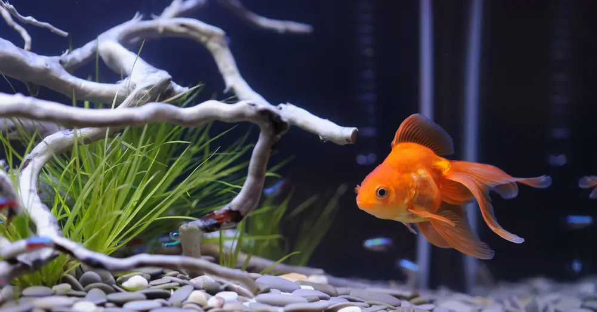

Tenemos nueva incorporación en el acuario.
Este es Fanta.

Es un fantail rojo, un pez originario de China, el cual gracias a su popularidad ha sido exportado a través de todo el mundo. Este pez se encuentra en aguas frías en las regiones circundantes de China, por ello estos peces solamente pueden desarrollarse con una temperatura del agua que se encuentre entre los 10 y los 20 grados centígrados, una temperatura superior o inferior a esta solo puede ocasionar problemas con su crecimiento.
Como los demás miembros de esta especie, el fantail rojo posee un cuerpo largo y ovalado, llegando a medir en condiciones óptimas aproximadamente 15 o 30 centímetros. La principal característica que podemos observar de este pez es su atractivo color rojizo que cubre completamente la superficie de su cuerpo.
Los machos de esta especie pueden distinguirse de las hembras por diferentes rasgos, uno de estos es la zona del ano que en el macho se encuentra de forma cóncava y en las hembras presenta una forma convexa. Las hembras de esta especie presentan una forma de su cuerpo mucho más abultada, mientras que los machos tienen el cuerpo mucho más esbelto. Los machos pueden desarrollar en ciertas partes del cuerpo, como en la zona de las branquias y las aletas pectorales, unos puntos de color blanco fácilmente detectables.
El fantail rojo es un pez omnívoro, por lo que es importante suministrarle los nutrientes necesarios para su crecimiento tanto a través de proteínas vivas como pequeños crustáceos o larvas de insectos y diferentes vegetales que ayuden a complementar las vitaminas que necesitan.
Es importante que este pez cuente con un espacio adecuado en su estanque, de esta manera podremos estar seguros de que alcanzará un óptimo crecimiento dentro del mismo. Es importante aclarar que la calidad de alimento que recibe y la temperatura a la que se encuentra el agua juegan un papel importante en el desarrollo del pez. Por fortuna este pez posee una gran resistencia, por eso, ligeros cambios de temperatura no le afectarán de manera grave.
El fantail rojo es un pez muy sociable, el cual puede
incorporarse de buena manera a un estanque con otros tipos de peces, ya que no
presenta comportamientos nada agresivos; sin embargo, es recomendable que este
pez sea incorporado a un estanque junto a otros miembros de su especie.
Esta especie de pez no presenta jerarquías, por lo que no habrá problemas cuando
estos se encuentren en conjunto. Un detalle a tener en cuenta es que peces de
tamaño inferior que puedan caber en su boca van a ser tomados como alimentos y
devorados por el mismo.
Los cuidados que necesita son muy simples:
Lo que haremos para cuidarlo:
Usarémos esta tabla para los turnos de alimentación de Fanta.
| Lunes | Martes | Miercoles | Jueves | Viernes | Sabado | Domingo |
|---|---|---|---|---|---|---|
| Nerea | Juanjo | Nerea | Juanjo | Nerea | Juanjo | Nerea |
| Juanjo | Nerea | Jose | Juanjo | Nerea | Juanjo | |
| Nerea | Juanjo | Nerea | Juanjo | |||
| Juanjo | Nerea | Juanjo | Nerea | Juanjo | Nerea | Juanjo |
{kind=link}